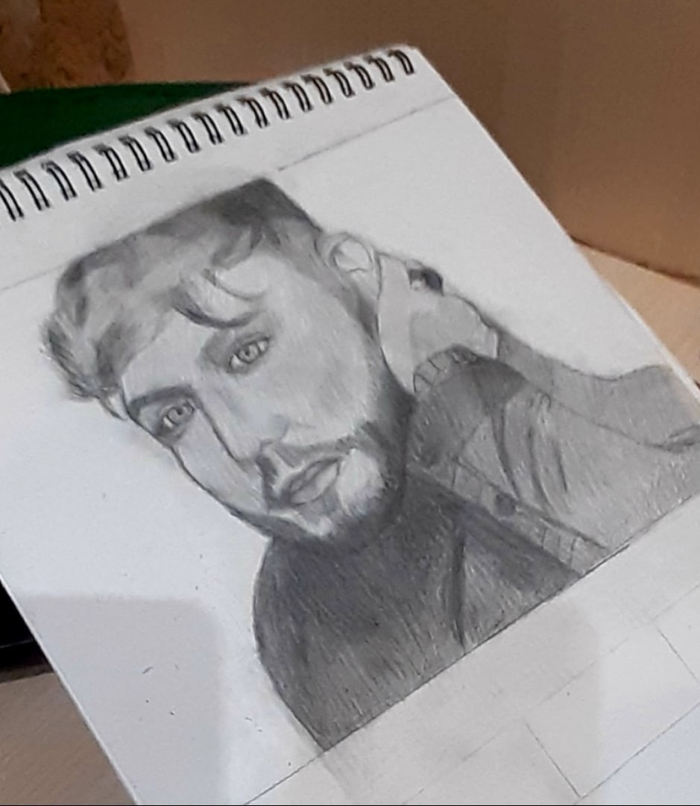
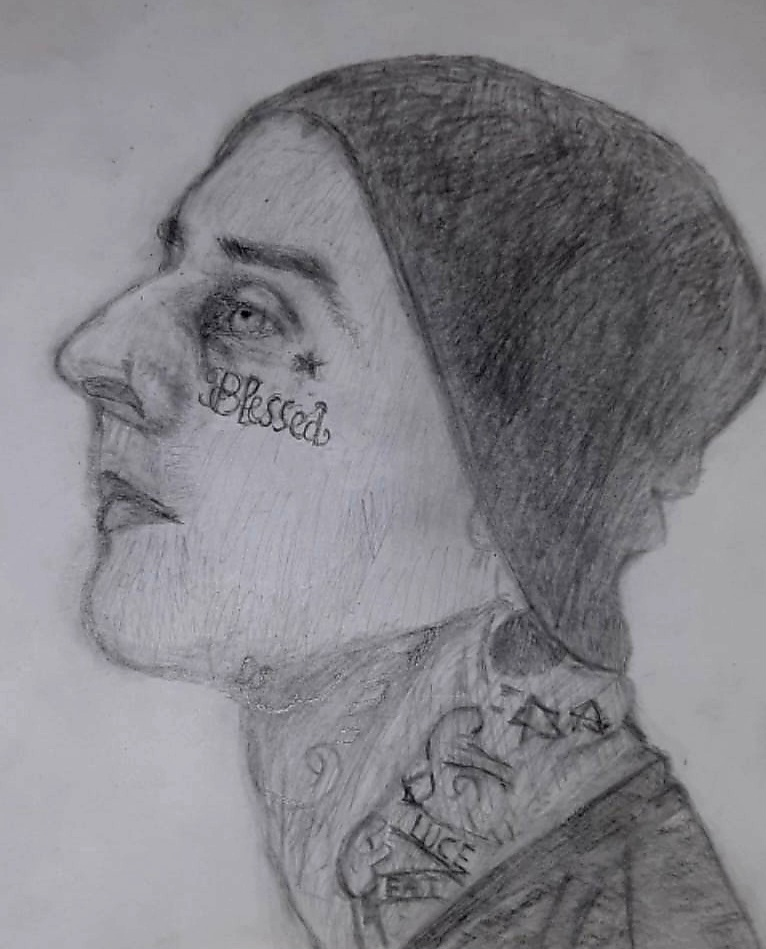
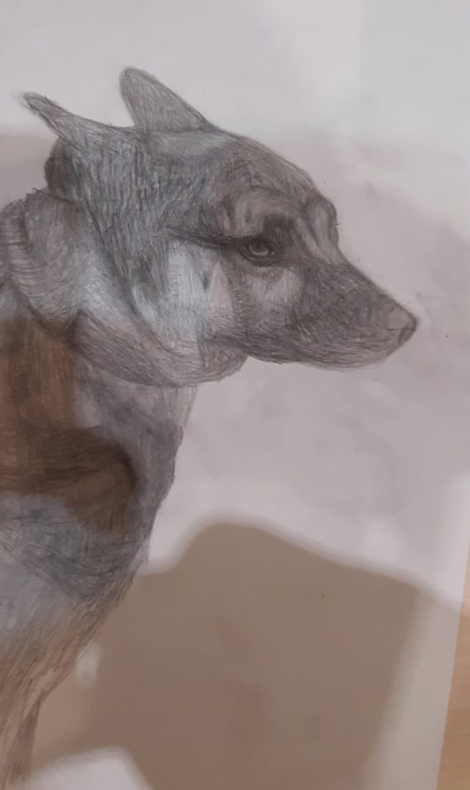

О себе
Привет всем!
Кратко обо мне:
- Елизаарова Анна Романовна
- Дата рождени 14.11.2002
- 20 лет
- Живу в городе Тверь
- Студентка 2 потока курса "Мой первый сайт"
- Есть 2 кошки шотландской породы , они мама и дочь
Меня зовут Анна,мне 20 лет,я из города Твери.У меня ДЦП,но это ни сколько не мешает мне жить полноценной жизнью.
Я закончила колледж- профессия графчический дизайн. Люблю музыку ,поклонница британского испольнителя Джеймса Артура.
Увлекаюсь изучением английского языка, могу читать книги на английском в оригинале.
У меня есть самое любимое хобби рисование , в основном я рисую
портреты (есть арт-аккаунт в instagram), при этом я нигде не училась этому. Сейчас я студентка 2 потока курса "Мой первый сайт" и мне очень нравится этот курс ,это что-то
новое для меня . В дальнейшем хочу продолжить профессию по этому направлению.


